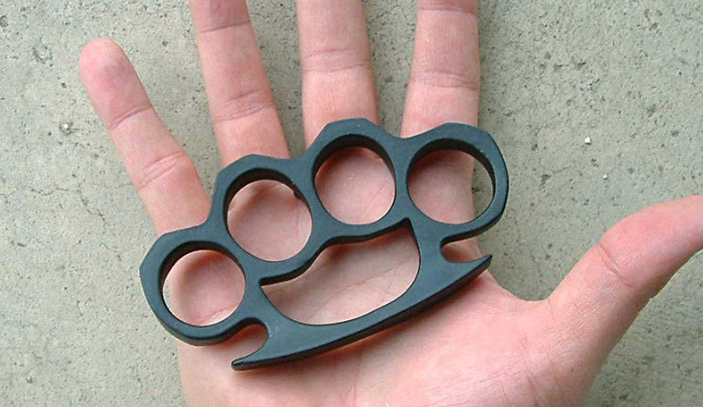

Brass Knuckle Busters
Brass knuckles (variously referred to as knuckles, knucks, brass knucks, knucklebusters, knuckledusters, knuckle daggers, English punch, iron fist, paperweight, or a classic) are "fist-load weapons" used in hand-to-hand combat. Brass knuckles are pieces of metal shaped to fit around the knuckles. Despite their name, they are often made from other metals, plastics or carbon fibers. Designed to preserve and concentrate a punch's force by directing it toward a harder and smaller contact area, they result in increased tissue disruption, including an increased likelihood of fracturing the intended target bones on impact. The extended and rounded palm grip also spreads across the attacker's palm the counter-force that would otherwise be absorbed primarily by the attacker's fingers, reducing the likelihood of damage to the attacker's fingers. It also allows its user to break glass windows without injuring their hands, thus are widely utilized in vehicle theft to break car windows.
R210
300 In Stock